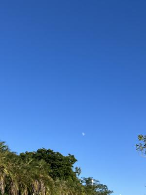

うるがいの話 ある日
最新: 外回りの工事終える【うるがいの話 ある日】とは 一日だけのプログです
『うるがいの話』の最新一日だけのプログで、通信料が少なく経済的だ。カニの画像をクリックすると全ての日付が載る『うるがいの話』サイトを表示します
|
|
【うるがいの話】 うるがい(ｳﾙｶﾞｲ urugai)とは、『もずくがに』の名前でとても大きくなります。 |
|---|---|
|
|
【カミマヤーの話】 猫のことを方言でマヤーといいます。カミマヤー（kamimayaa）とは、神の猫のことです。 |
|
【たながぁの音楽】 たながぁ（ﾀﾅｶﾞｰ tanagaa）とは手長えびのことで、何種類かあり大きいのは車 エビぐらいになります。 |

|
【ぶながぁの話】 ぶながぁ(ﾌﾞﾅｶﾞｰ bunagaa)とは、赤い髪の毛、赤い身体、そして身長は１ｍ２０ｃｍ ぐらい、川の蟹を食べているの目撃された。場所は沖縄県国頭郡大宜味村のと ある村僕の隣近所に住んでいる爺さんから、聞いた話です。 |
|
|
【ギーマの話】 ギーマ(giima)とは、山原の里山に咲くスズランに似た、 花を付けます。実は食べられます、 気が付くと口の周りが紫になっています。 |
2023年11月24日 (金）外回りの工事終える
16:59

ペンキ塗りを終え、ペンキがつかないようにカバーをしていた外のポーチライ
トのカバーが、破壊してしまった。修繕しようにも、ての施しようもないと。
工事の人が勧めてくれた防雨型のＬＥＤ￥１３，８８０円を速攻でメイクマン
へ行き、購入する。工事の人が、設置に悩むこと２時間ほど難儀な事であった
。なんと、ラッキーなこと、もし、事なきを得ても近い将来街灯は使えなくな
った筈。午前中で、終える予定だったが想定外の出来事で、昼２時前に外回り
の工事が終わった。
１６時５５分 ビットコインの総資産 ￥１６、２３１（↑１０１）